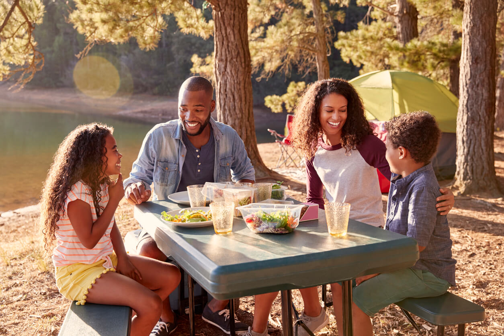

Contenido de atractivos turísticos

{kind=link}
Comedor Doña Hicha
Direccion: Paraguay y Salta
Cel: 3794-705009
Horario de atencion: Martes a Domingo de 11 a 15 hs y de 19 a 00.30
capacidad para comensales: 30
Info: Variedad de platos, no cuenta con delivery.
Rotiseria Fritanga
Direccion: Bartolome Mitre y Tomas Ubeda
Cel: 3794-889200
Horarios de atencion: Lunes a Lunes de 10 a 14.30 hs y de 19 a 01 hs.
Info: Varios tipos de menúes, cuenta con delivery.
Resto Bar la Farola
Direccion: Av. 25 de mayo y Sabas Gallardo
Cel: 11-313030520
Horarios de atencion: Lunes a Sabados unicamente por la noche de 20hs a 00hs.
Info: Ofrece menúes de comida rapida, cuenta con espacio interno y al aire libre,
con delivery.
Capacidad: 40 personas.
La Estacion Bar
Direccion: Av. 25 de Mayo entre Junin y Brasil
Cel: 3781-492624
Horarios de atencion: Martes a Domingo de 20hs a 00 hs (fines de semana hasta las 05 am)
Info: Cuenta con delivery y para comsumir en el lugar. Menú variado
Capacidad para 30 a 35 personas.
Resto La Casona
Direccion: Rivadavia y San Martin
Cel: 3794-670324
Horarios de atencion: Abierto al publico todo el dia. Con desayuno, almuerzo, merienda y cena. Menú
variado.
Info: : Con delivery.
Capacidad: 50 personas.
Delicias Cande
Direccion: San Martin
Cel: 3794-610175
Horarios de atencion: Lunes a Sabado de 19hs hs a 23.30hs
Info: : Menu de comida rapida, unicamente para delivery.
Resto y Bar Queen
Direccion: Armengol Alegre y Junin.
Cel: 3781-484437
Horarios de atencion: Lunes a Domingo de 20.30hs a 00 hs. Miercoles cerrado.
Info: : Cuenta con delivery.
Capacidad: 30 personas.
Rotiseria Cata
Direccion: Armengol Alegre y Paraguay.
Cel: 3794-158549
Horarios de atencion: Lunes a lunes de 19.30 a 23.30hs.
Info: : Menú de comida rapida, unicamente para delivery.
Rotiseria Mi Luz
Direccion: Barrio Progreso
Cel: 3781-492587
Horarios de atencion: todos los dias.
Info: Unicamente para delivery.
Ñande Gusto de Valeria Molina
Direccion: Mendoza Esquina ituzaingo.
Cel: 3781-405252
Info: : Comidas tipicas, capacidad para 20 personas. Reservas con 24 hs de
aticipacion. Atiende todos los dias y ofrece desayuno merienda cena y almuerzo.